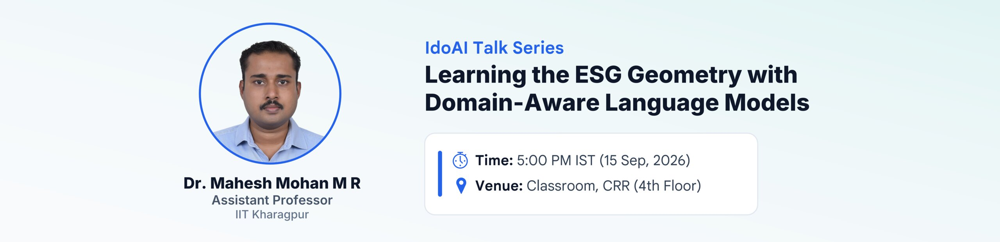

IdoAI Events & Archive
View our next upcoming talk highlight, all past events with slides and references.
Next Upcoming Event
Medical Computer Vision for the Clinic: Gallbladder Cancer and Beyond
The deployment of machine learning in clinical settings is fundamentally constrained by noisy data, domain shifts, and the necessity for absolute diagnostic trust. In this seminar, we will explore some of the foundational successes in diagnosing Gallbladder Cancer (GBC) from handheld ultrasound imagery with deep learning and computer vision techniques. By injecting domain-specific inductive biases through architectures like GBCNet and FocusMAE, we demonstrated that specialized computer vision models can overcome the inherent artifacts of ultrasound, match expert radiologist performance, and transition to prospective clinical testing.
However, scaling these specialized architectures for widespread clinical deployment reveals new challenges in medical image analysis. We will outline the lab's roadmap to overcome these bottlenecks by transitioning toward unified, adaptive models that define the next generation of medical computer vision. We will discuss our active research and highlight opportunities for researchers interested in building robust, deployable medical computer vision systems from the ground up.
Recent Events (2026)
Recent 2026 departmental talk sessions and full abstracts
Abstract: Responsible investing aims to generate positive impact across Environment (E), Society (S), and Governance (G), and rating companies along these dimensions is now widespread, making ESG scores highly popular. Current ESG solutions cannot model high-dimensional, multimodal time series capturing the joint evolution of ESG risks, financial returns, news, and sentiment, even though this domain requires jointly reasoning over distinct numerical signals where both numerical proximity and semantic type must be preserved. In this talk, we discuss a novel domain-aware representation learning framework that learns geometry-preserving representations for heterogeneous time series. The resulting model jointly learns to forecast future values and to organize entities in a representation space that reflects their temporal evolution. Trained on ESG, returns, news, and sentiment, the domain-aware LLM learns a representation space that enables downstream applications such as latent-space search for superior asset selection and portfolio rebalancing.

Abstract: Understanding human behaviour is essential for effective communication and social interaction. Gestural cues such as eye gaze, facial expressions, and body movements offer deep insights into complex mental and emotional states. Accurately capturing and modelling these cues in unconstrained environments remains a significant challenge due to data annotation complexity, variability in human behaviour, and computational limitations. My research focuses on developing robust computational models that can automatically learn and interpret non-verbal gestural cues in naturalistic, real-world scenarios, with minimal supervision. These models aim to bridge the gap between human cognitive understanding and machine perception, making AI systems more socially aware and context-sensitive.
My work has wide-ranging applications in real-world settings, including monitoring student engagement in classrooms, assessing group cohesion in collaborative environments, detecting emergent leaders, identifying dominant individuals in discussions, and analysing crowd behaviour. By advancing automatic behaviour understanding 'in-the-wild', my research contributes to building more adaptive and human-centric AI systems capable of functioning effectively in everyday social environments.
Abstract: Obscuring sensitive data from adversarial eavesdropping in distributed decision-making is a significant challenge across a range of applications, including smart grids, autonomous vehicle coordination, and multi-robot surveillance. Existing methods—such as encryption or differential privacy—modify transmitted messages without considering the underlying dynamics of the cyber-physical processes that generate the data, nor the capabilities of potential adversaries. In our recent work, we demonstrate that every dynamical system possesses an inherent system-level privacy that can be harnessed through the design of intelligent inter-agent communication protocols.
In this talk, I will present our recent results on extracting system-level privacy in the presence of eavesdropping adversaries. We derive analytical expressions that quantify the level of protection as a function of both the adversary's capabilities and the agent communication graph. Finally, I will show how these results can be applied in the context of distributed optimization and federated learning.
Speaker Bio: Dipankar Maity is an Assistant Professor in the Department of Electrical and Computer Engineering at the University of North Carolina at Charlotte. He earned his B.E. degree in Electronics and Telecommunication Engineering from Jadavpur University, India, in 2013, and his Ph.D. degree in Electrical Engineering from the University of Maryland at College Park, in 2018. Following his doctoral studies, he was a Postdoctoral Fellow at the Georgia Institute of Technology. He has been a visiting scholar at the Technical University of Munich, Germany, and at the KTH Royal Institute of Technology, Sweden. He is a member of the IEEE Control System Society Technical Committee on Security and Privacy. He is an Associate Editor for the IEEE Control Systems Letters journal.
Seminar Archive (2024 & Prior)
In 2024, the departmental reading group was initiated under the name PANDA (Paper Analysis and Discussion in AI). Complete collection of past talks, slides, paper references, and abstracts from 2024 are given below:
Abstract: Modern automation increasingly relies on robots capable of precise and flexible manipulation in unknown environments. This work presents a collaborative pick-and-place system using the Mycobot 280 Jetson manipulator integrated with ROS MoveIt, designed for complex object handling using vision.
The system utilizes ROS MoveIt for motion planning, collision avoidance, and kinematics computation to control the manipulator. Stereo vision with dual RGB cameras generates point clouds, enabling YOLOv8 to perform real-time object detection. DBSCAN clustering localizes objects in 3D space, providing coordinates for manipulation.
The manipulator operates through ROS scripts to execute pick-and-place tasks, with real-time tracking feedback allowing adjustments during operation. The system includes human activity imitation by analyzing video input to replicate human-object interactions, such as placing objects into bins or handing them to users.
Abstract: In this talk, we'll be discussing practical training methods that can help you achieve improved performance in no time on any Deep Learning task.
Abstract: The talk was on Biasness and its different forms that plague the current algorithmic decision-making world.
Abstract: Deep learning has revolutionized many machine learning tasks in recent years. Traditional machine learning models predominantly handle data in Euclidean spaces, but the surge in complex, interconnected data types necessitates a paradigm shift towards non-Euclidean domains. This is where graph machine learning emerges as a pivotal innovation, providing robust frameworks for analyzing and interpreting data that inherently exists in the form of graphs or networks. Graph learning proves effective for many tasks, such as classification, link prediction, and matching. Generally, graph learning methods extract relevant features of graphs by taking advantage of machine learning algorithms. This talk aims to demystify the prominent architectures within graph machine learning, its wide-ranging applications, and the methodologies for employing Graph Neural Networks (GNNs) to address specific problems.
Abstract: Ensemble learning has proven to be highly efficient in producing robust learners. Modern ensemble learning methods can be computationally cumbersome during training and inference due to the presence of large number of individual machine learning (ML) or deep learning (DL) models. To this end, many different techniques have been proposed to reduce computational overhead during the practical implementation of such large ensemble models. These techniques belong to the broad domain of Static Ensemble Selection (SES) or Ensemble Pruning in which a sparser subset of models is chosen as a representative ensemble. The SES techniques produce a sparse ensemble by using specially designed algorithms and objective functions for a specific metric like classification accuracy or prediction diversity.
In this work, we propose Sparse Stochastic Ensembles (SSEnse), a framework that obtains a sparser ensemble while being sensitive to user settings such as computational budget, performance degradation tolerance, and sparsity level.
Background & Details: Ensemble learning's history traces back to the late 20th century. The pioneering work of Leo Breiman in 1996 on bagging and AdaBoost in 1995 introduced ways to combine diverse weak learners for superior generalization. This research talk delves into the rich history of ensemble learning, tracing its evolution through bootstrapping, boosting, random forests, and modern deep learning architectures such as ResNets and DenseNets, along with distributed and federated learning applications.
Abstract: Deep Neural Networks deliver overwhelming generalization performance over a wide variety of tasks like image classification, language modeling, etc. However, the growing size of the networks poses concerns of increasing computational and storage overheads. Besides, parameter redundancy in modern deep networks is well established given their overparameterized nature. In this talk, we discuss the Lottery Ticket Hypothesis, which empirically proves the existence of subnetworks (winning tickets) within dense, randomly-initialized feed-forward networks and outlines a training procedure to arrive at the winning solution by training from scratch.